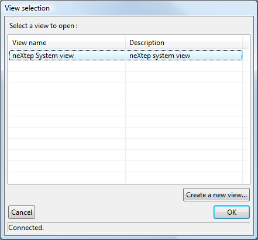
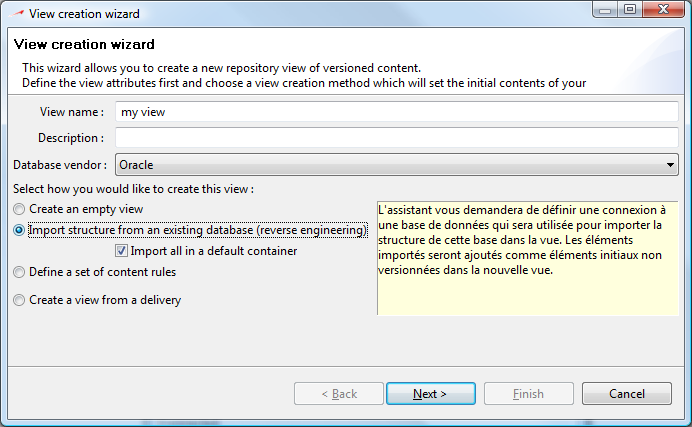
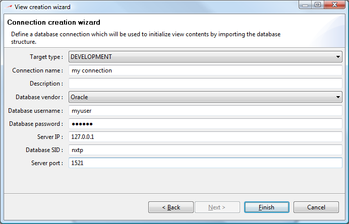
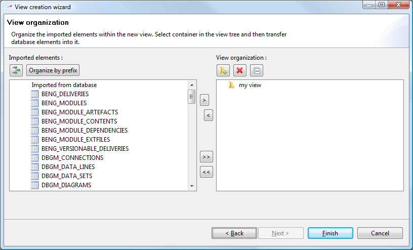

Once you are connected to the repository and authenticated, you will be prompted for view selection :

A view is a set of elements in a given version.
As we said earlier, your repository will contain many applications composed of many modules, each of them having many versions. A view allows you to specify the elements you will work on. It is a subset of the repository consisting in a view of given elements in specific versions. You might have as many views as you need.
They are simply an abstract, logical representation of a database structure in a given version.
Initially, there will only be one empty view in the repository. This view is useful for maintenance, administration, or specific maintenance on the environment. You will never be able to remove this specific view.
You can create a new view by clicking Create a new view on the view selection dialog. Typically, this is what you will do at the very first start of neXtep designer.
A wizard dialog will come up prompting you for information about the view you want to create.
|
 |
 |
 |
If you are creating a brand new database application, simply enter the view name and select create an empty view.
If not, you might want to import your existing database application into the repository. To do this, you will select the 2nd creation type which will use a target connection to load an existing database structure into your new view. You will be prompted for your connection settings to define the database connection to use for fetching initial database structure.
In this “reverse engineering” view creation method, you will be able to import your existing application into one single module or to split it into several “business” modules by checking / unchecking the “Import all in a default container” box. When unchecked, a view organization dialog will allow you to dispatch all database structure elements into different modules.
Note that in the custom organization method, you might want to let neXtep designer “guess” the initial organization of your view by clicking “Organize by prefix”. If you click this button, neXtep designer will extract the name prefix of your structural elements and will auto-dispatch the elements into corresponding containers. You will then be able to adjust this organization in the same dialog page.
Click finish when done and your view will be created.